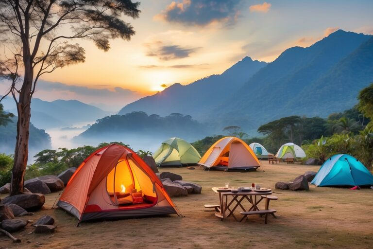
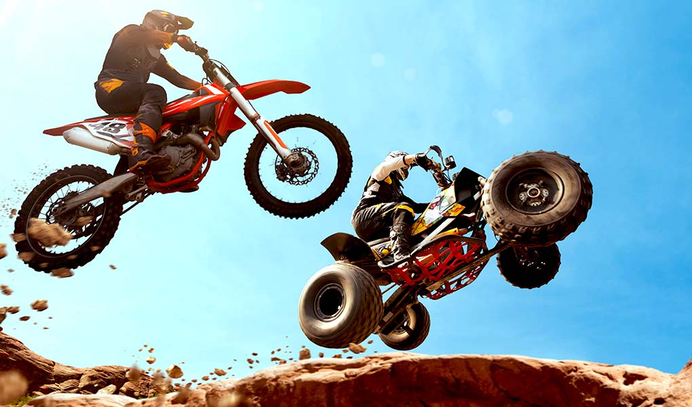

My Top 3 Favorite Things To Do
Click On The Image To Learn More About campimg
Camping is a chance to escape the everyday hustle and reconnect with nature's simple pleasures. It's about breathing in fresh air, pitching a tent under a starry sky, and gathering around a crackling campfire. It's about the shared stories, the laughter, and the quiet moments of reflection. It's about feeling grounded, adventurous, and truly alive.
Click On The Image To Learn More About Soccer
Soccer: It's messy, it's beautiful, it's captivating. The sweat, the scrambles, the roars, the heartbreaks—it's all part of the game. It's the shared passion, the underdog stories, and the reminder that anything can happen until the final whistle. It's the beautiful game.
Click On The Image To Learn More About dirt bikes and quads
Quads and dirt bikes: Where the adrenaline pumps, the mud flies, and the only limit is your own courage. It's the thrill of conquering terrain, the satisfaction of mastering a machine, and the camaraderie of a shared passion. It's the freedom of the open trail, the rush of a perfect jump, and the satisfaction of pushing your limits. It's more than a hobby, it's a way of life.